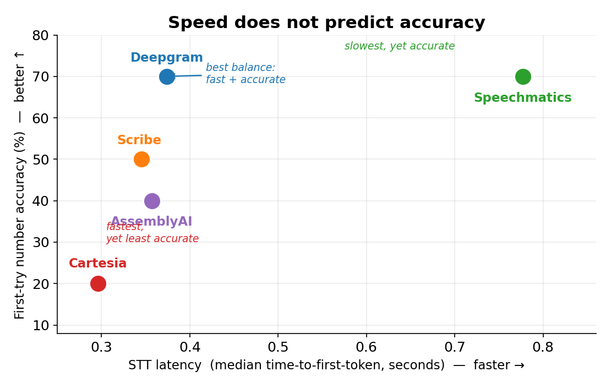
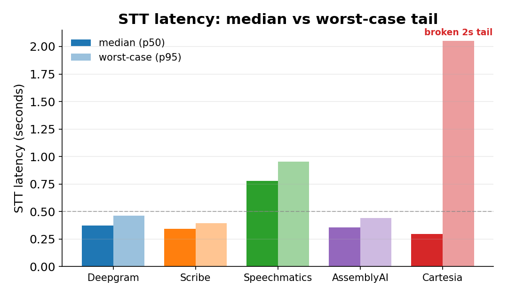
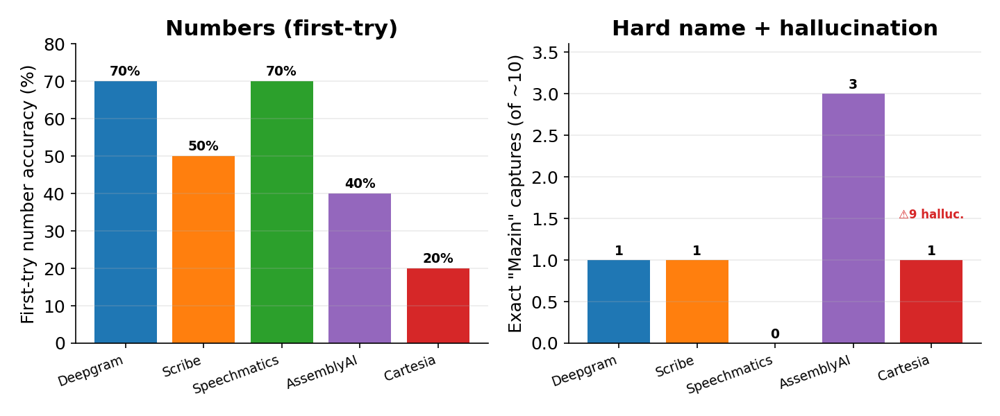

A controlled comparison of five streaming STT engines in one identical PSTN pipeline.
On the telephony layer, the latency of a speech-to-text engine is a necessary but insufficient property. What actually matters for an AI voice agent is accuracy and reliability under real PSTN conditions.
We swapped five streaming STT engines into one identical Pipecat telephony pipeline — holding turn-taking, the language model, the text-to-speech, and the 8 kHz audio path constant — and placed roughly ten live Twilio phone calls through each (about fifty total), every call requiring the assistant to capture a spoken name and a ten-digit callback number. We find that speed does not predict accuracy: the fastest-median engine was the least reliable. We also find that one does not have to trade speed for accuracy.
Deepgram's STT ties for the best first-try number accuracy (70%) with zero permanent number losses and zero hallucination, yet runs at roughly half the latency of the slowest accurate engine. We pair it with ElevenLabs for synthesis because Deepgram's own Aura text-to-speech — not its STT — interrupted and cut off speech on the line.
| STT engine | Latency p50 | Numbers (1st-try) | "Mazin" exact | Halluc. | Verdict |
|---|---|---|---|---|---|
| Deepgram Nova-3 | 0.374 s | 70% | 1 | 0 | 🏆 Recommended |
| AssemblyAI Universal-3 Pro | 0.357 s | 40% | 3 | 0 | Runner-up · names |
| Speechmatics Ursa (Enhanced) | 0.777 s | 70% | 0 | 0 | Accuracy alt · ~2× slower |
| ElevenLabs Scribe v2 | 0.345 s | 50% | 1 | 0 | Middle |
| Cartesia Ink-Whisper | 0.296 s | 20% | 1 | 9 | Disqualified |



One Pipecat pipeline, one component swapped (the STT). Turn-taking (a local end-of-turn model over Silero VAD), the LLM (Claude Haiku 4.5), the TTS (ElevenLabs Flash v2.5), and the 8 kHz → 16 kHz audio path were held identical across all five engines. No vocabulary seeding. Latency was instrumented per service (time-to-first-token); number accuracy was scored from the assistant's spoken read-back of the caller's number; ground truth confirmed each batch ran its labelled engine.
This is a practical engineering benchmark, not a published academic study. Single speaker (one voice, accent, microphone, handset), ~10 calls per engine, no ground-truth Word Error Rate, and an "AI read-back" accuracy proxy that mixes the STT with the language model. The TTS-interruption finding is a qualitative field observation, not a measured result. Treat the rankings as directional — a 70% vs 66% gap here is roughly one call.
@techreport{telephony_stt_benchmark_2026,
title = {The Best Speech-to-Text Engine for AI Voice Agents on the Telephony Layer},
author = {{MM Intelligence Voice Research}},
year = {2026},
note = {A controlled comparison of five streaming STT engines in one identical PSTN pipeline},
url = {https://github.com/therealmazin/telephony-stt-benchmark}
}